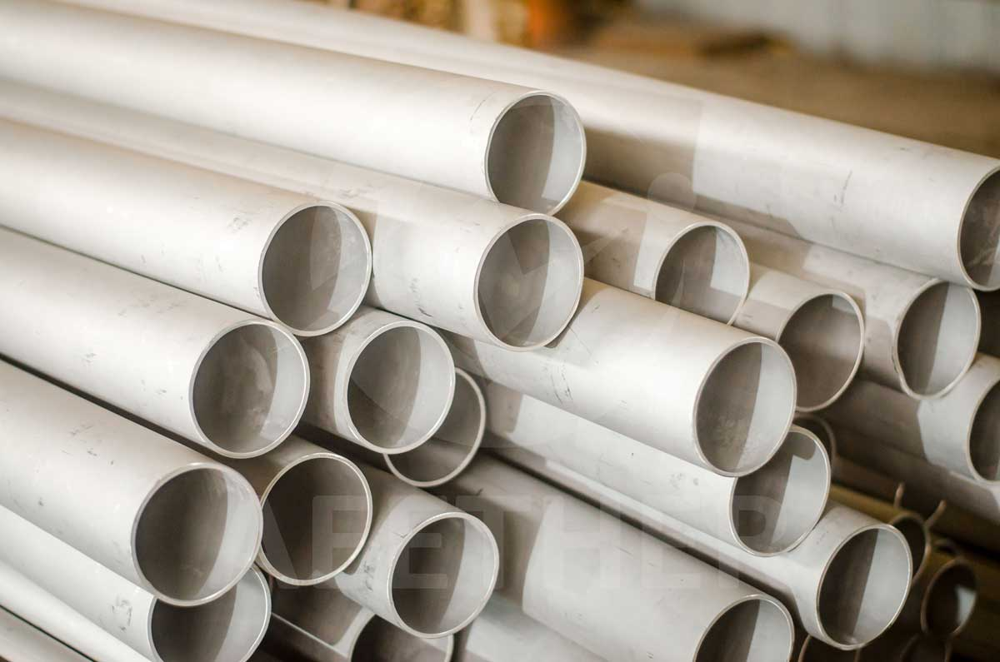
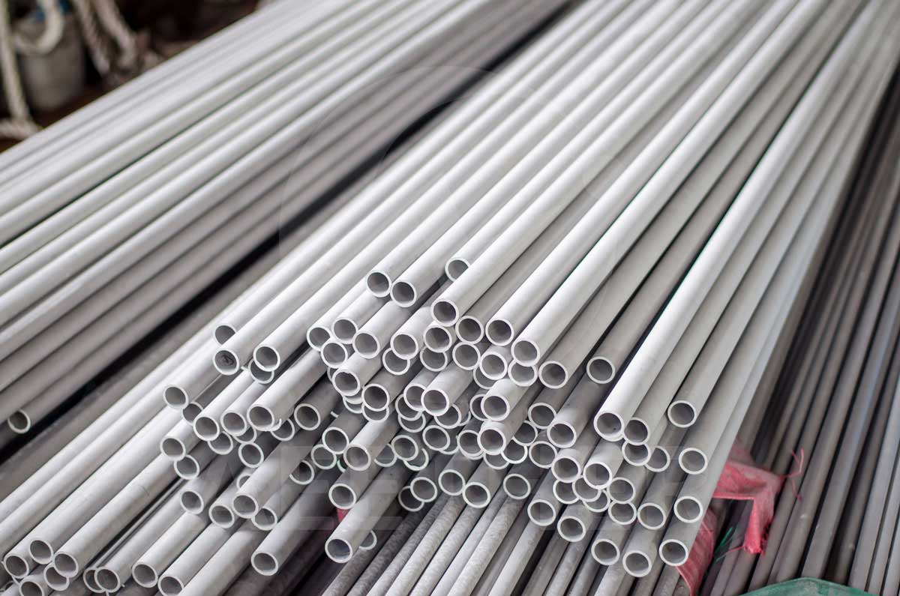
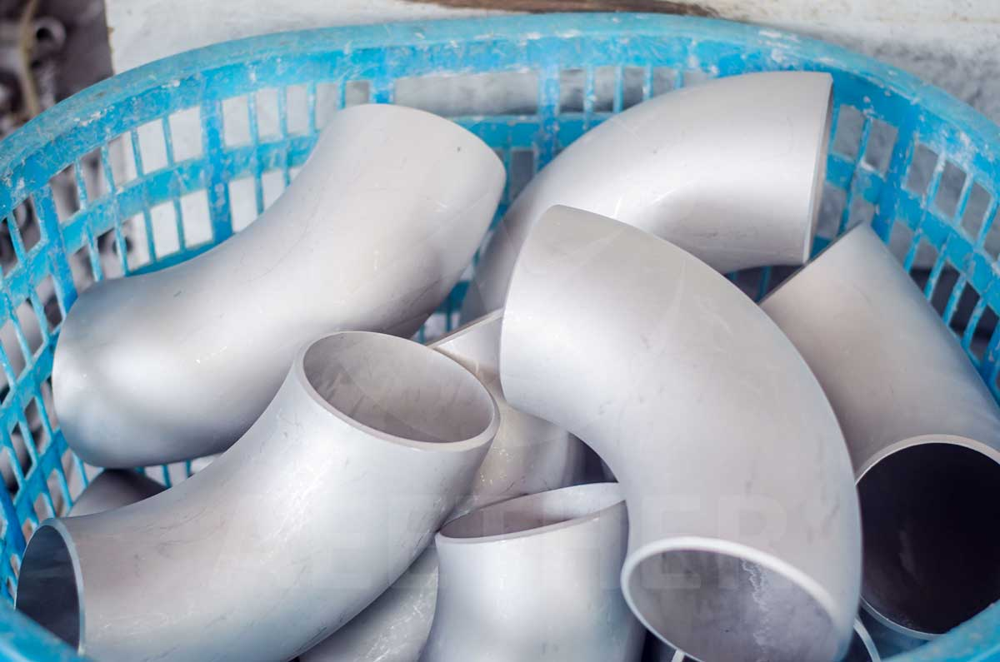
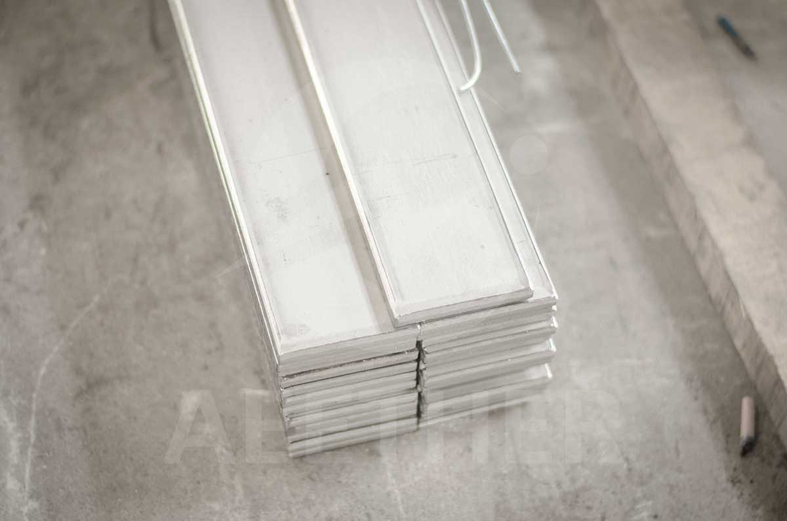
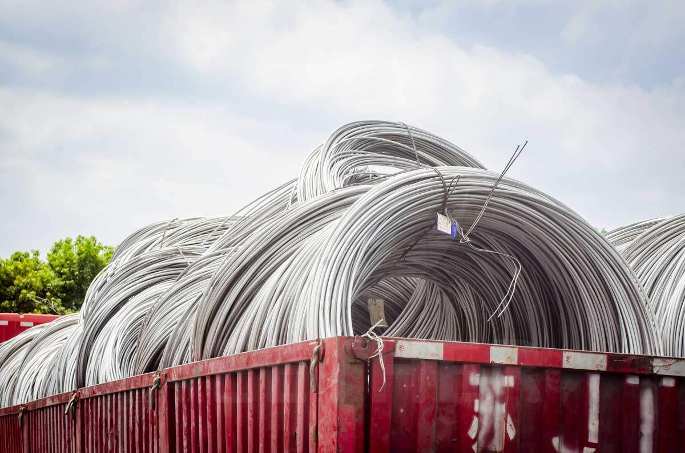

Overview
Pickling is an important production process in metal production and processing. In industrial applications, pickled surfaces are the most commonly used surfaces. At the same time, pickling also plays an irreplaceable role in the production process.
In this article, we will introduce in detail the principles of pickling, the products suitable for the pickling process and the role of pickling in different production processes. I believe that by reading, you can have a deeper understanding of pickling.
What is Pickling?
Pickling is a process in which metal materials are exposed to acidic solutions to obtain a white surface. Its principle is to allow the acidic solution to corrode the oxide scale and part of the outer metal on the metal surface. The surface after pickling often has a gray-white, rough matte texture. The picture below is a typical pickling surface:

There are many pickling solutions. For example: sulfuric acid, hydrochloric acid, phosphoric acid, nitric acid, chromic acid, hydrofluoric acid and mixed acids, etc. Among them, sulfuric acid and hydrochloric acid are the most commonly used.
The pickling processes mainly include immersion pickling, spray pickling and acid paste rust removal. The most commonly used is the immersion pickling method. This method requires pouring an acidic solution into a pickling tank and placing the metal into the acidic solution. This soaking process often takes several hours.
The Purpose of Pickling
Remove Scale
The most important purpose of pickling is to remove scale. Metals react with oxygen when heat treated at high temperatures. There will be a layer of black oxide scale on the surface after heat treatment. They are mainly iron oxides (Fe3O4, Fe2O3, FeO, etc.). This layer of oxide scale will not only affect the use of the metal, but also affect the subsequent processing. Therefore, it is necessary to use acidic solution to corrode these oxide scales, which is also the most important role of pickling.

Good Appearance
Pickling solutions can corrode not only the oxide scale, but also the metal itself. This allows the metal surface to achieve better flatness and roughness through slight corrosion. Therefore, pickled metal often has a better surface.

In addition, metals often collide and rub with other objects during production and transportation. This can pick up the metal's color and rust from other objects. These surface impurities can be removed by pickling.
Improve Corrosion Resistance
Pickling also has another effect that cannot be ignored, which is to improve corrosion resistance. Pickled surfaces tend to have better corrosion resistance. This is why most industrial applications require delivery with pickled surfaces.
Which Products Require Pickling?
Pipes
Pipes are divided into seamless pipes and welded pipes according to the production method. Among them, seamless pipes are generally used in industrial product manufacturing, so they often use pickling surfaces. At the same time, seamless pipes also need to undergo multiple picklings during the production process. However, there will also be a small number of welded pipes that are required to be delivered with pickled surfaces.

Pipe Fittings
The situation is similar for fittings and pipes. From the perspective of use fields, pipe fittings are divided into industrial pipe fittings and sanitary pipe fittings. Generally, industrial pipe fittings have an pickled surface, while sanitary pipe fittings have a polished surface.

Hot-rolled Plate
Hot rolled plates are generally thicker plate products. It is produced using hot rolling process. Hot rolling is a thermal process that requires rolling materials at high temperatures. Therefore, oxide scale usually exists on the surface after hot rolling. These oxide scales need to be removed by pickling.

Wire Rod
Wire rod refers to coiled rod products. It is larger in diameter than wire and is generally produced by hot rolling. Therefore, wire rod also needs to be pickled to remove oxide scale.

When is it Necessary to Pickle Metal?
For some industrial metal material products, pickling is required after final heat treatment to obtain a good surface and better corrosion resistance.
In addition, for some products with more complex processes, such as seamless pipes, etc. These products often need to be rolled many times to obtain the final size. The material needs to be softened by annealing before each rolling pass. Pickling is also required after each annealing to remove scale. Otherwise, these oxide scales will affect the size and surface of the product during the next rolling process.

Finally, for some stock products, their surfaces may become stained during storage. At this time, these surface problems can also be improved by pickling.
Precautions for Pickling
First of all, the concentration of the pickling solution is generally controlled at 10% to 20%. This concentration allows the corrosion rate of the pickling solution to reach the most reasonable range. If the concentration is too low, the pickling effect may not be ideal. If the concentration is too high, the metal itself is susceptible to severe corrosion.

Secondly, the purity of acidic solutions will decrease after being used many times. A higher iron content will be present in the solution. When the iron content exceeds 80g/L, the pickling effect will decrease significantly. At this time, the pickling solution should be replaced in time.

In addition, the pickling time should be strictly controlled according to different materials. Since the pickling solution will corrode the metal surface, if the pickling time is too long, the size of the metal will be reduced.
Finally, pickling is a very polluting process. Therefore, wastewater treatment and other environmental protection measures should be taken promptly during the pickling process. At the same time, pickling should comply with local environmental regulations.
FAQ
What is the difference between pickling and sandblasting?
Pickling and sandblasting are both surface treatment processes. At the same time, pickled surfaces are very similar to sandblasted surfaces. However, the difference between them is that pickling uses corrosion to remove impurities from the surface, while sandblasting uses high-speed jet particles to polish the surface. Generally speaking, some surface problems that cannot be removed by pickling can be solved by sandblasting. In addition, the material usually needs to be pickled or polished before sandblasting.
Can scale be removed without pickling?
Scale can also be removed by machining, but this method will change the dimensions of the product. In addition, if you just don't want scale, you can isolate the oxygen during heat treatment so that scale will not develop. This heat treatment method is also called bright annealing and is suitable for small-size products.
Do all metal materials need to be pickled?
No. If your material itself is corrosion-resistant (such as stainless steel or superalloy), the scale should be removed by pickling, which has a positive effect on corrosion resistance. But for some metals that are not corrosion-resistant (such as carbon steel), pickling is not necessary. Since carbon steel will also produce oxide scale at room temperature, pickling makes no sense.
Further Reading


Conclusion
Pickling is a surface treatment process. It improves metal surfaces through the corrosive action of acidic solutions. At the same time, pickling can also remove scale and improve corrosion resistance. Seamless pipes, industrial pipe fittings, hot-rolled plates, wire rods and other products all use the pickling process. The pickling process plays an important role both during the production process and before final delivery.
We offer a wide range of superalloy products and provide high quality pickled surfaces. If you have any needs please contact us.